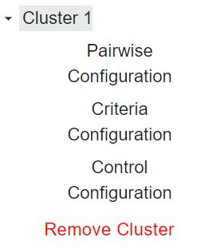

ILC Web application: User guide¶
Introduction¶
ILC APPLICATION CONFIGURATION¶
!This doc is a test for creating a user guide. Edit this out when entire doc draft is finished.!
The ILC application behavior is controlled through these configuration Pages:
The main configuration file page
The device/criteria configuration page
The pairwise configuration page
The Criteria configuration page
The control configuration page
The following sections describe what each configuration file controls and the parameters defined within these configuration files.
Note
There is an option for this document to be used in dark mode.
Click the Sun button on the top right corner of the page.

Importing Master Driver Configuration Store¶
This is the main configuration tool. There is an option right at the start that allows you to upload a file. This will allow you to import your Master Configuration File.

To import a configuration file, or choose a separate file, in the top left corner of the screen you will see a hamburger drop down menu. once you click on that drop down you will see 2 options:
Save configuration file
Import New Master Driver Configuration File.
Choosing the import new master driver configuration file will give you an option to import your master configuration file. Once the file is uploaded, it will give you the option to choose from the uploaded settings.

After uploading a file, pages can now be filled out based upon the file you have uploaded to the application.
Example: There is a dropdown for the option inside Building in the Main Configuration page. Before inserting the Configuration File, there is an option to click the dropdown. Once this Dropdown is chosen, nothing will appear. After inserting the chosen Master Configuration File, choosing the dropdown will insert a string from the File inserted into the application.

This example image shows the string selected in the dropdown of Building.
Calculator¶
The calculator is a tool that you will see throughout the configuration tool.

The calculator has a variety of different options to utilize within it. There is Operation, and Operation argument. These parts of the calculator will be explained within subsections of this category.
Operation¶
Operation is the first Calculator option.
An operation in this application is a string representation of a mathematical formula. The formula is evaluated to return a numeric value.

To input items into Operation, an input from the calculator must be placed.
Note
You cannot type the input, it has to be entered inside the calculator for the operation criteria to populate.
Operation Argument¶
Operation Argument is the second option available after a formula has been chosen.
Operation Argument’s are points. As you populate the demand formula within them, it will populate the array and string within them.
From the Operation Argument tab, there will be a dropdown of options to choose from.

When an operation argument is chosen, there will be an option on the right side of the selection bar to +add. This will enable the operation argument to the Operation formula chosen from the calculator.
Demand Formula¶
Once the operation is produced, then the JSON code on the right side of the screen will populate with the correct formula chosen.
As an operation is produced, in the JSON code on the right side of the screen will be the Demand Formula. The demand formula can be described as the screen for the calculator. As inputs are selected, they will be shown inside of the JSON code with what was inserted.


Save Configuration¶
The Save Configuration button will allow you to save the formula that is currently being used. Using the Save Configuration* button will store your formula inside the Demand Formula on the right side of the screen in JSON code.
Saving your formula will store your data in that location unless the Clear Formula button is chosen. If the Clear Formula button is chosen, your saved formula will stay in the stored location unless a new formula is created and saved. This will replace the previous formula.

JSON¶
JSON code will be visible throughout the application on the right side of the screen. As items are implemented inside of the program itself, they will populate inside the JSON code as well.
Each section within the JSON code will have subsections dedicated to their corresponding categories.
For example, inside of this panel, these results are a screen for results that the user has input into the application options on the left side.

This is what will be inserted into the Main Configuration Page

After the items are inserted, they will be displayed inside of the Json code.
There will also be an option to choose drop down arrows inside of the JSON code to expand within a sub category and see where exactly inserted strings will be stored.
This will show you, in real time, where all of the information inserted will be, which category they will be in, formulas printed from the Calculator and items inserted from the Main Configuration File.
Main configuration Store¶
The main configuration store contains building level configuration parameters.
The following list describes each of the configuration parameters in the main configuration store.

This list will go over each of the input options located in the main configuration page: - Campus - Building - Power_meter - Device - Agent ID - Demand Limit - Control Time - Curtailment Confirm - Curtailment Break - Average Building Power Window
Campus¶
The campus name as published by the VOLTTRON platform.driver service.
The campus filled in is PNNL.
Building¶
The building name as published by the VOLTTRON platform.driver service.
Power Meter¶
contains information to identify the power meter data published by the platform.driver. Expand the Power Meter dropdown to select the device, point, and define the Demand Formula using the calculator interface

Device¶
The device name for the building power meter as published by the platform.driver.
The device will be shown inside of power_Meter.
Device will take in a string inserted from the Main Configuration File and use it inside the dropdown.
Point¶
The point name on the power meter for whole building power as published by the platform.driver.
Agent ID¶
The ILC instance (running application) name on the VOLTTRON platform.
Agent ID will be underneath the power_meter section of the application.

Demand Limit¶
The ILC application manages devices (curtail) in an attempt to keep the average whole building power below this kilowatt value. The average time is determined by the average_ building_power_window parameter.
Demand limit will take an input as a float.
Note
ILC will manage controllable loads to maintain building demand at this value.
demand_limit will show underneath Agent Id:

Control Time¶
The amount of time (minutes) the ILC application holds curtailment of devices once the building goal is met. During this period if the average WholeBuildingPower value increases above the goal the timer resets and the ILC application will attempt to curtail additional available devices. If all devices have been curtailed and the WholeBuildingPower is still above the goal the timer is not reset.
Control Time asks for your input in minutes. Once input is complete, the number will be seen on the right side in the JSON code inside of control_time.
Note
After ILC control brings the building demand to the demand target, I:C will hold control of devices for this amount of time, then the ILC will begin to release devices.
Curtailment Confirm¶
Delay time (minutes) after curtailment actions to confirm that building demand goal has been met. If the building goal has not been met, additional curtailment action(s) will be taken if possible.
Curtailment Confirm will be located right below control time on the main Configuration page.
Curtailment Break¶
The time (minutes) after the completion of curtailment actions where no further curtailment actions are taken. Completion of curtailment actions happens after the curtailment_time timer elapses (i.e., the average WholeBuildingPower goals was met and maintained for the curtailment_time or all devices were curtailed and the curtailment_time timer elapsed).
Curtailment Break will be shown inside the Main Configuration page.
Note
ILC will release devices in a staggered manner over amount of time.
Average Building Power Window¶
The average building power is calculated using a moving window. This parameter configures the length (minutes) of that window.
The Average building power window is located at the bottom of the **Main Configuration* Page. This will take an input in minutes.
Stagger Release/ Off Time¶
The Stagger Release algorithm is in testing to alleviate the potential rebound effect caused by returning devices to normal operations.
The Stagger release and stagger Off time buttons will be located towards the bottom of the Main Configuration Page. Both buttons can be checked or unchecked:

Note
These will be automatically set as Boolean values. When checked, either items will be set inside of JSON code to : True. When unchecked, they will default to false.
Clusters¶
Array containing information on each cluster of devices (a cluster consists of a group of devices with the same criterion):

Creating a cluster will grant access to Pairwise Configuration, Criteria Configuration, Control configuration.
Cluster Priority¶
Weighting factor assigned to this cluster. The sum of these weighting factors for all clusters should equal 1.0. If the sum of the cluster weighting factors is not 1.0, the ILC application returns an error upon startup and shutdown.
Note
The cluster priority section needs to be set to 1 if only one cluster is present.
The Cluster Priority will be shown at the bottom of the Add cluster Page.

Adding A Cluster¶
There is a drop down menu on the bottom of the sidebar labeled as +Add cluster.

set your cluster to priority 1 if there is only one cluster.

You have the option to insert from the following list: RTU, AHU and Light into each of the options.
Once Save new cluster is chosen, a new dropdown is available with Pairwise Configuration, Criteria configuration and Control Configuration.

Note
For multiple clusters, the cluster priority MUST be equal to 1. if Cluster 1 has a priority of 1, then Cluster 2 must have a priority of 0.
Pairwise Configuration¶
In the dropdown menu on the left, there will be an additional dropdown when you create your custom cluster. The custom cluster will be listed with 3 items listed as such:

Underneath the custom list, you will see a dropdown called: Pairwise Criteria. This is a customizable drag and drop list. Whichever order this list is placed in,
the list for the settings below will follow.
inside of each of the options, there will be a power mode you can set. in a dropdown for each. inside each dropdown there is an option to set a number on both sides of a horizontal number line. The Red line indicates the reciprocal to the said number. i.e. 2 being 1/2 and 3 being 1/3. The Blue line indicates an integer represented as the number shown.
in the drag and drop section, there is also an option to add another item to the list with the add criteria button.
Warning
If you have set numbers in the graphs below and need to change the drag and drop lists, those numbers will reset back to their default state.


Criteria Configuration¶
Criteria configuration is the second dropdown inside the created curtail options. It will be listed as shown:

Criteria configuration takes in stored values from pairwise configuration and lists them as they are in that page. once this option is selected, you will see an button appear in the center of the application:

when an option is selected, a dropdown will appear:

Once an option within the drop down is chosen, there will be an button to choose operation type. Within each operation type, the functionality differs. formula, status, mapper, constant, and history.

Any number of relevant criteria can be used to prioritize loads for curtailment to manage consumption (e.g., electricity or natural gas). The ILC application supports five types of configurable criteria which include the following:

The criteria type is controlled by setting the operation_type parameter for each criterion. Once a criteria is selected, there will be a difference in what each operation does. They will be described in the sections below:
Formula¶

formula allows a user to declare mathematical formulas that are evaluated using current device measurements (data from the device are published by the VOLTTRON platform. driver service). The following list contains the formula criterion configuration parameters:
operation : String representation of a mathematical formula. This mathematical formula is evaluated to return a numeric value.
operation_args : List of point names from the device (HP1) used to evaluate the mathematical formula in the operation parameter. The values associated with each point are updated when new device data are published by the platform.driver.

The math table shows an example of a formula criterion configured for a heat pump. The criterion name, zonetemperature-setpointdeviation, should match the name for the same criterion used in the pairwise comparison configuration file.

Status¶
The status criterion reads a point (Boolean or enumeration) on the device and returns either an on_value or an off_value depending on whether the current status of the point is True (enumeration value of 1) or False (enumeration value of 0), respectively. The following list contains the status criterion configuration parameters:
point_name : The point on the device (HP1) that is evaluated. This device point should be a Boolean or an enumeration with a value of 0 or 1.
on_value : The numeric value returned by the criterion if the point on the device indicates a True or enumeration value of 1.
off_value : The numeric value returned by the criterion if the point on the device indicates a False or enumeration value of 0. Figure 6 shows an example of a status criterion configured for a heat pump. The criterion name, rated-power, should match the name for the same criterion used in the pairwise comparison configuration file.

Mapper¶

The mapper criterion allows a user to categorize loads and assign values to the categories. For example, room type can be used to set the importance of the rooms (heating or cooling of the room constitutes the load) for curtailment of power consumption. Rooms assigned higher numerical values are regarded as less important (more likely to be curtailed first) than rooms assigned lower numerical values. Users set their own priority depending on the importance of the room (1: most important and 7: less important). Table 2 shows an example of AHP priority based on room type.

The following list contains the mapper criterion configuration parameters: - dict_name : The dictionary name in the main ILC configuration
file that contains the key (category) and value assigned to that category.
map_key – The category assigned to the device. Figure 7 shows an example of a mapper criterion configured for a heat pump. The criterion name, room-type, should match the name for the same criterion used in the pairwise comparison configuration file.

Constant¶

The constant criterion returns a constant value for inclusion in the AHP. The following list contains the status criterion configuration parameters:
value : The value returned by this criterion for inclusion in the AHP.
Figure 8 shows a constant criterion example, configured for a heat pump. The criterion name, stage, should match the name for the same criterion used in the pairwise comparison configuration file.

History¶

The history criterion evaluates the rate of change of a point on the device to return a numeric value. The following list contains the history criterion configuration parameters:
point_name : The point on the device (HP1) that is evaluated.
comparison_type – This configuration parameter can be configured to be direct or inverse. A direct comparison returns the value of the point at the current time minus the value of the point at some time in the past (configured as previous_time). An inverse comparison returns unity divided by the value of the point at the current time minus the value of the point at some time in the past (configured as previous_time).
previous_time : Time in minutes in the past to compare to current value of the point on the device.
The figure below shows an example of a history criterion configured for a heat pump. The criterion name, historical-comparison, should match the name for the same criterion used in the pairwise comparison configuration file.

Control onfiguration¶
Inside of the sidebar on the left side of the screen inside of Device clusters, there will be the option Control configuration.

once control configuration is chosen, there will be an button in the center of the screen that will appear:

first, when a device is selected, it will auto fill the campus and building number previously selected. it will look like Campus/building/device. When a device is selected, there will be more options that appear.

At the top there will be an option called: Operation. Input can be inserted by using the calculator and its functions.
Note
Using the calculator can be referred to the Calculator Section of this userguide.
When an operation is inserted, an operation argument may be inserted as well:

After an operation and operation argument is chosen, choose the +Add next to the operation argument selection and that will be shown inside of operation:

Once there is a set operation and operation argument, there will be a curtailment Setting below the calculator. The first button that is accessible is Point.
Note
The point on the device (i.e., HP1) that is commanded to achieve the load reduction.
There will be a dropdown list that will show as you select point.

Once a selection is chosen, the next option on the list will be the Control Method.
Towards the bottom of the Control configuration, there is an option to +Add augment. This will create a separate new configuration for items to be added to.
Offset¶
The first of the list chosen will be offset. Once offset is chosen, a list of new configurations will appear.

Offset: If offset parameter is present, then the value parameter is ignored and the current value of the point on the device plus the offset is commanded to the point on the device to achieve the desired load reduction.
once offset is chosen, there will be 2 items to configure. The first one is the offset input, and the load input.

Value¶
Value will be the next item on the dropdown list inside control method.
Value will work similarly to offset in terms of layout. There will be an input for Value and there will be an input for load.
Value: The value the point is commanded to, in order to achieve the load reduction.

The selected inputs will be shown inside of the curtail_settings inside of the JSON code.
Equation¶
equation will be the final item on the dropdown list inside of control method.
equation allows an equation input from the calculator. Once an operation is set, then an operation argument can be set as well. Equation also has a load option.